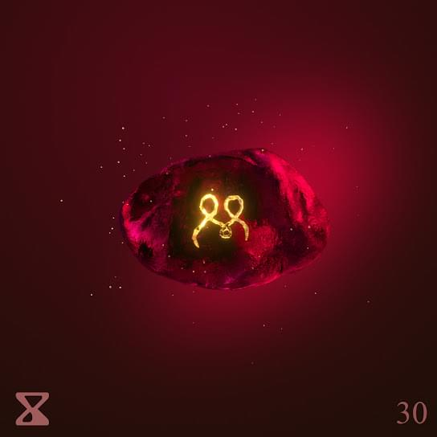

Rilès
Rilès, Rilès Kacimi de son nom complet est né le 4 janvier 1996 à Rouen, en France.
Cet homme est un homme à tout faire. Déjà, dans la musique, c'est un rappeur compositeur, interprète,
producteur. En plus de tout cela, il sait dessiner et danser (comme un dieu, je le précise).
Ses chansons bien que surtout rappées, sont de tous les styles possibles et inimaginables. Donc que vous
vouliez danser ou pleurer, vous trouverez une chanson idéale.
Rilès se démarque des autres artistes français, car il compose et interprète ses chansons en anglais.
Comme il l'explique dans une de ses chansons, il a commencé à écrire en anglais, car dans ses chansons,
il aimait se livrer et ne voulait pas que sa famille comprenne les paroles, étant assez pudique.
Ce qui le démarque aussi est qu'il se lance le défi de faire une chanson de A à Z par semaine pendant un
an. Je vous l'ai dit, ce gars est un monstre.
Il est obnubilé par le TEMPS et cela fait de lui un personnage très intéressant qui ne mérite que d'être
écouté.
Ma chanson favorite :
Enjoy The Ride
Et pourquoi donc?
Pourquoi c'est ma chanson préférée ? Car je suis amoureux de cette chanson !
Enjoy The Ride est le genre de chanson qui vous fera danser et pleurer en même temps.
La mélodie est entrainante et est justement parfaite pour des trips en voiture avec ses amis.
Mais derrière cette douce mélodie, se cachent des paroles très profondes et sincères.
La "Ride" ici est la vie de Rilès et la vie en général. Rilès se livre et dit qui faut profiter
de cette vie et de tous ses moments,
car il sait qu'elle ne sera pas longue et qu'elle peut s'arrêter du jour au lendemain.
Donc ce décalage entre cette mélodie guinchante et ces paroles à faire pleurer The Rock fait que
cette chanson se doit d'être écoutée.
Ses nouveautés :
Ya Habibi Ya
Ya Habibi Ya est sortie le 14/11/21, un dimanche, donc à l'occasion des RILESUNDAYZ,
qui n'est d'autre que le nom donné à cette aventure qu'est de faire un son par semaine, qui sort
donc tous les dimanches.
C'est la 30ème chanson du défi et elle ne parle d'autre que d'amour, avec "habibi" qui veut dire
"mon amour" en arabe.
Cette chanson est une déclaration d'amour, Rilès demande à "habibi" cet amour protecteur et
plein d'espoir.
Rilès nous embarque dans sa déclaration d'amour sur des airs de musique orientale, mais avec des
percussions qui vous font voyager.